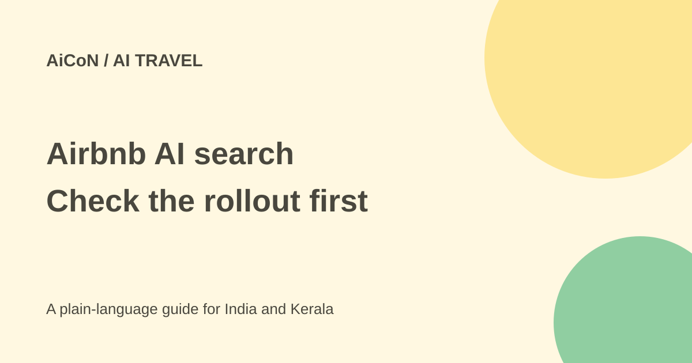

Airbnb AI search: what the fall update means for India
Airbnb announced new AI search and comparison features in its fall update. The planning rollout starts in the US. An Indian user should not assume every announced feature is already available.

What did Airbnb announce?
Airbnb's 30 September 2026 update adds natural-language and voice search across homes, experiences and services. AI filters can suggest relevant choices from a typed keyword. The announcement's example is "baby", which can surface cribs, playgrounds and children's books or toys.
Search results can include AI-written descriptions of a home's features. Homes saved in a wishlist can be compared side by side with AI summaries. These features may make searching easier, but summaries are not replacements for the listing's details, host confirmation or booking conditions.
Is it available in India?
The official announcement says the AI trip-planning rollout starts in the US. It does not provide an India release date. Check what your own account and app show. Updating the app does not prove that a region-limited feature has been enabled.
AI-powered support chat is described as available in more than 50 languages, with voice support being expanded. The announcement does not give a complete language list or confirm Malayalam specifically. A large language count should not be read as support for every Indian language.
How to use it when available
- Search in your own words, but still enter or confirm dates, destination and guest count.
- Review the filters that AI selected. Remove any that misread your needs.
- Save suitable homes to a wishlist and use the comparison feature if it is offered.
- Read the full listing, amenities, reviews, house rules and cancellation terms. Verify important requirements such as step-free access or a crib with the host.
- Check the final amount, currency, fees and refund rules before booking. An AI summary is not the final checkout.
- If a support answer is unclear, ask for the underlying policy or human help rather than relying on an unsupported promise.
These are practical checks, not a report of an account-level feature test. No booking or live account search was performed for this guide.
What about the other fall features?
Airbnb also describes connecting with people you know and seeing shared trips on a travel map. It says users can control which trips appear, how much is shared, and hide or remove a trip or block a connection. Check those settings before showing future travel plans to a broader group.
The newly announced delivery, laundry, baby-gear and rental services have named regional limits. Examples include meal delivery in select European cities and baby gear from November in over 60 US cities. Do not assume these are services at a Kerala listing.
Host tools such as dynamic pricing, multi-listing calendars and AI earnings insights are described as coming later in the fall. Announced future tools are not necessarily switched on now. Even price recommendations need a host's review.
Free or paid?
The update does not state a separate fee for the AI planning features. That does not make accommodation, services or booking fees free. Availability, terms and promotional offers can change. Use the price actually shown for your dates and account rather than estimating from an AI description.
For Kerala travellers and hosts
For a trip from Kochi or elsewhere in India, the immediate lesson is to check rollout and booking facts separately. Use normal filters if AI search is absent. Verify location, travel time, check-in needs and the actual facilities. An AI mention of "family-friendly" does not prove every safety feature you need.
A host should check translations, prices and calendar changes before applying suggestions. Avoid sharing customer or guest details unnecessarily with connected tools. Keep travel-map sharing separate from what must be shared to complete a booking.
What changed since the original post?
The 1 October post correctly said US-first rollout and no India date. The current official source still supports that distinction. This guide adds privacy controls and separates present guest features, regional services and future host tools. It does not claim that all fall features are live worldwide.
Frequently asked questions
Does AI verify every amenity?
No. Read the listing and confirm important needs with the host.
Is Malayalam support confirmed?
Not by the language count in the announcement checked here.
Can I use this in India today?
Check your account. The source states a US-first planning rollout and gives no India date.
Sources: Official fall update · Independent launch report. Checked 7 October 2026.